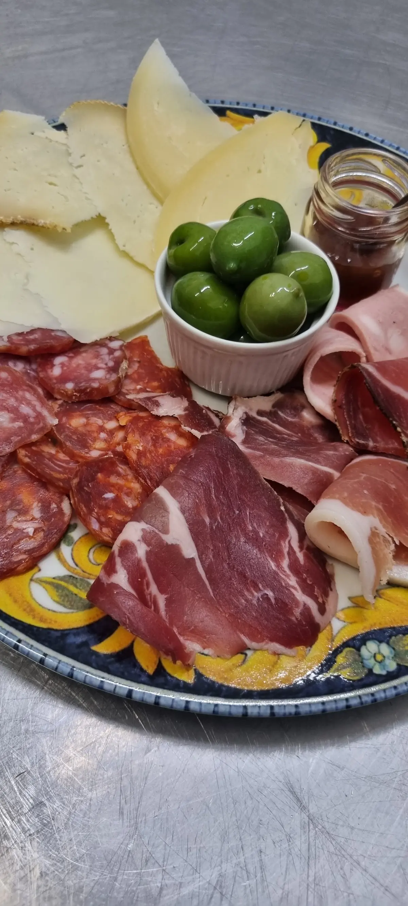
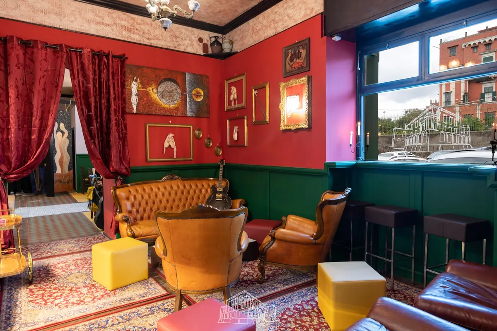

Un tagliere di salumi, formaggi e olive.

Ristorante · Marigliano
OsteriaDucale
Ristorante a Marigliano, in Piazza Castello, 22.
4,7136 recensioni GooglePiazza Castello, 22, 80034 Marigliano, NA

La sala con le pareti rosse, le tende e i divanetti.
Piazza Castello, 22, Marigliano. 4,7 su 5 su Google, 136 recensioni.
Recensioni
Cosa dicono i clienti
4,7 su 5 · 136 recensioni su Google. Qui sotto alcune, riportate senza modifiche (i nomi sono abbreviati).
★★★★
Di fronte al castello ducale si trova questo piacevole ristorante che propone piatti di buona cucina e piatti vegetariani. La cucina tradizionale con piatti tipici, saporiti. Molto pulito tutto il locale bagni compresi. Prezzo onesto
★★★★★
5 stelle perche abbiamo mangiato bene sia piatti tradizionali che vegani. La genovese vegana spaziale complimenti.
Anche il servizio molto cortese pero i tempi di attesa,soprattutto per i secondi, sono stati esageratamente lunghi,forse per carenza di personale in cucina.
Infine sull' ambiente c è ampio margine di miglioramento, soprattutto la saletta col divano secondo me è un pastrocchio di roba tutta diversa che non sta per niente bene insieme: quadri vari, mobile nero orribile, piatti bicchieri suppellettili tappeti colori delle pareti, vi prego togliete tutto, rendetela piu semplice. Anche le tovaglie usate mi sono sembrate di scarsa qualita. Migliorate l'ambiente (perche anche quello conta) e il locale diventerà un gioiellino
★★★★★
Stasera ho cenato all’Osteria Ducale con mia moglie e l’esperienza è stata davvero piacevole. Il locale è carino e accogliente, perfetto per una serata rilassante. Il servizio è stato eccellente: gentile, educato e molto preparato.
Gli ingredienti utilizzati sono di alta qualità e questo si riflette nei piatti. Ho particolarmente apprezzato il loro olio extravergine d’oliva, che ha esaltato il sapore del polpo.
Per iniziare, ho preso l’insalata di polpo con patate ed era deliziosa. Come primo, mi è stato proposto un fuori menù: spaghetti con zucchine, menta e mandorle. Anche questo piatto era ottimo, un mix di sapori fresco e ben equilibrato.
Per secondo, ho scelto la tagliata di manzo con pomodorini e rucola, accompagnata da patate al forno. La carne era tenera e saporita, perfettamente cucinata. Inoltre, come antipasto insieme al polpo, ho provato anche le bruschette alla genovese che erano eccezionali.
I prezzi sono molto ragionevoli considerando la qualità del cibo e del servizio. In definitiva, l’Osteria Ducale è un posto che consiglio vivamente per chi cerca un’ottima esperienza culinaria in un ambiente piacevole. Torneremo sicuramente!
★★★★★
Location stupenda sotto il castello ducale, lo chef ha assecondato in pieno le mie voglie, spaghetto alla nerano godurioso e cottura pasta perfetta, ma la pasta patate e provola da applausi. Secondo lo spezzatino alla genovese è da rinominare in confettura alla genovese...stupenda, non ho potuto assaggiare i vini ma ho visto una falanghina del Sannio prodotta da un piccolo produttore che secondo me merita molto. Tappa obbligata. Bravi bravi
★★★★★
Cortesi e gentili nel ricevermi in un orario particolare a pranzo, ho mangiato la parmigiana vegana e devo dire che era buonissima, ma la chicca è la proposta del giorno “genovese vegana” veramente sono rimasto esterrefatto, nulla a togliere alla genovese originale, ma questa che ho mangiato è molto ma molto simile. Complimenti. Sicuramente ritornerò con molto piacere.
Orari e dove siamo
Vieni a trovarci
| Lunedì | Chiuso |
|---|---|
| Martedì | 19:30–24:00 |
| Mercoledì | 19:30–24:00 |
| Giovedì | 19:30–24:00 |
| Venerdì | 19:30–24:00 |
| Sabato | 12:00–17:00 · 19:00–24:00 |
| Domenica | 12:00–16:00 |
Osteria Ducale
Piazza Castello, 22, 80034 Marigliano, NA
392 353 5629
Orari della scheda Google: nei festivi possono cambiare, chiamate per conferma.
Piazza Castello, 22, 80034 Marigliano, NA
Contatti
Scrivici
Un messaggio su WhatsApp, o una telefonata: vi risponde Osteria Ducale.